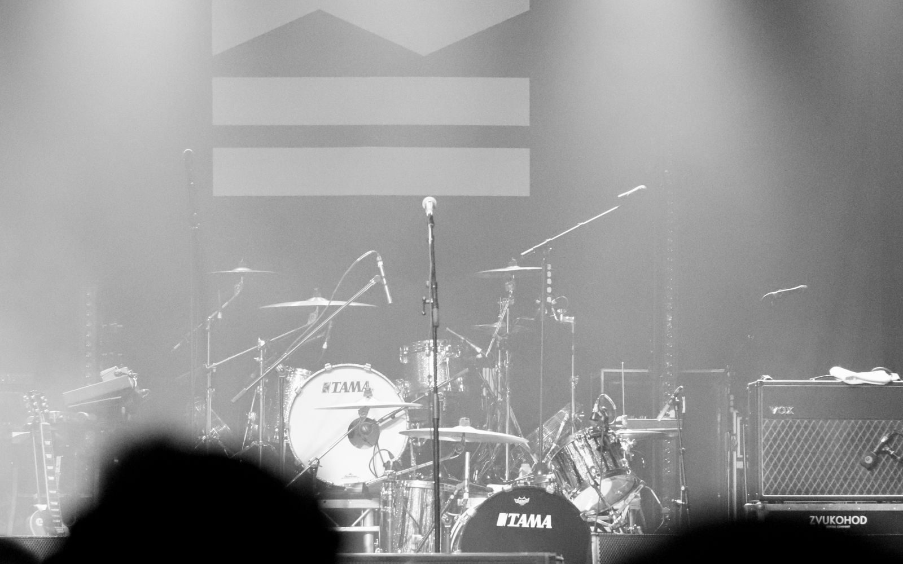
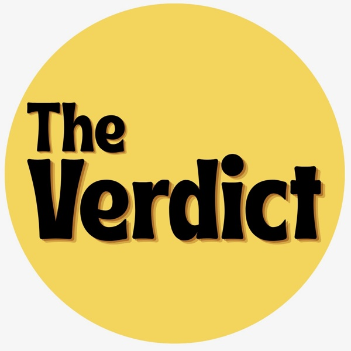
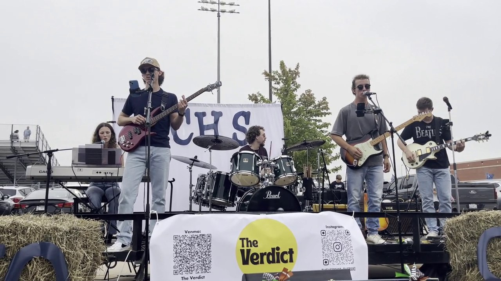

CENTRAL ILLINOIS / MIDWEST BOOKINGS
THEVERDICT.
Classic Rock · Blues · Pop ’60s to Today
Five musicians. Decades of favorites.
Instagram / @theverdict_theband ↗01 / THE SOUND
WATCH US LIVE.
02 / THE BAND
GOOD SONGS.
PLAYED LIVE.
ALL NIGHT.
We’re The Verdict. Five musicians from Central Illinois, bringing decades of classic rock, blues, and pop favorites to the stage.
From the ’60s through today, we bring recognizable songs and an energetic live show to bars, breweries, festivals, college events, and private parties.
With up to four hours of music and our own PA available, we’re ready for your room or your outdoor stage. Based in Central Illinois, we’re expanding across the Midwest.
Let’s put a date on the calendar ↗
03 / THE SONGS
WHAT WE PLAY.
Four hours of recognizable music
spanning generations.
CLASSIC ROCK
- Come Together — The Beatles
- Sultans of Swing — Dire Straits
- Mary Jane’s Last Dance — Tom Petty and the Heartbreakers
- Summer of ’69 — Bryan Adams
- Free Bird — Lynyrd Skynyrd
’90s / 2000s ROCK
- Everlong — Foo Fighters
- Basket Case — Green Day
- Santeria — Sublime
- Say It Ain’t So — Weezer
- Seven Nation Army — The White Stripes
POP / CROWD FAVORITES
- Party in the U.S.A. — Miley Cyrus
- Everybody Talks — Neon Trees
- This Love — Maroon 5
- Take Me Out — Franz Ferdinand
- Kilby Girl — The Backseat Lovers
OTHER FAVORITES
- 9 to 5 — Dolly Parton
- All Your’n — Tyler Childers
- Take It Easy — Eagles
- Love Story — Taylor Swift
- Brown Eyed Girl — Van Morrison
04 / FROM THE STAGE
LIVE & LOUD.
Live photos
{kind=link}
{kind=link}
{kind=link}
{kind=link}
{kind=link}
FOLLOW THE VERDICT
More nights. More music.
05 / LET’S MAKE SOME NOISE
BOOK THE
VERDICT↗
Looking for live music for your venue,
event, festival, or party? Let’s talk.
AVAILABLE FOR
Bars · Breweries · Restaurants · Live music venues · Festivals · College events · Fraternity & house events · Private events · Community events · Outdoor events